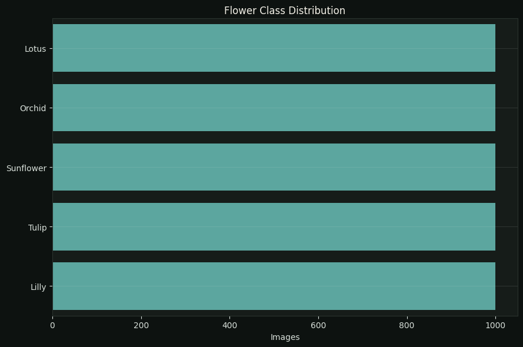

Computer Vision
Teaching Machines to Recognize Visual Patterns.
This project explores image classification across five flower categories, combining dataset exploration, visual analysis, model evaluation, and deployment-ready assets into a compact computer vision workflow.
Total images
4.999
Dataset size
Classes
5
Flower categories
Dominant
Lotus
Largest class
Balance ratio
1.00
Min / max count
Model files
4 formats
Keras, SavedModel, TFLite, TFJS
Gallery
5 samples
One image per class
Deployment ready
Yes
Export assets available
Technical Focus
Visual bumbu
Portfolio enhancer
Case Study
Image Data, Classification, and Deployment
The project demonstrates an applied computer vision workflow, from understanding class distribution to preparing model assets for multiple deployment environments.

Deployment-Ready Assets
| format | file |
|---|---|
| Keras | best_model.keras |
| SavedModel | saved_model/ |
| TensorFlow Lite | tflite/model.tflite |
| TensorFlow.js | modeltfjs/ |
Stored formats4
Visual classes5
Gallery scopePublish-ready
Visual Exploration
Representative samples make the class differences easier to inspect and communicate before evaluating the model.
Key Takeaways
- Five clearly defined classes make visual inspection an important part of understanding the dataset.
- Multiple deployment formats demonstrate that the work extends beyond experimentation into practical model delivery.
- Class-level visualization helps communicate what the model is expected to recognize before focusing on performance metrics.
Project Positioning
This project complements my data portfolio with hands-on computer vision experience, demonstrating that I can work with unstructured image data as well as structured business datasets.